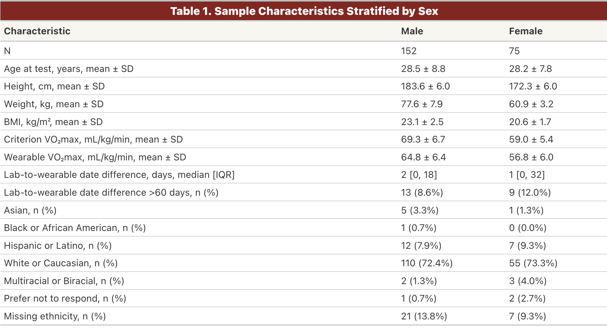
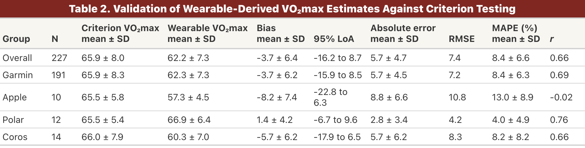
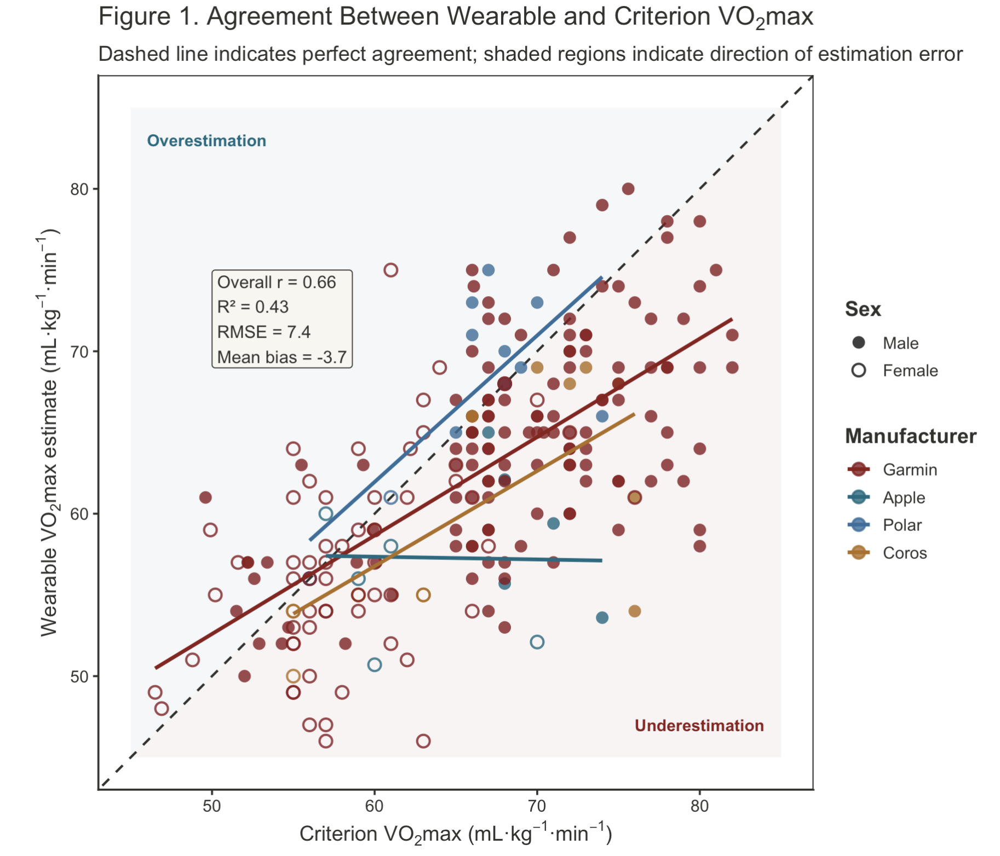
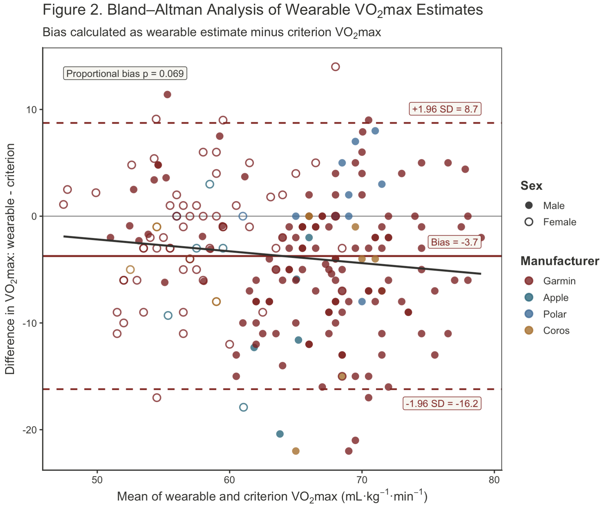

Introduction
- $VO_2\text{max}$ is a central physiological marker of endurance performance and aerobic fitness.
- While wearable devices commonly estimate $VO_2\text{max}$, their algorithms are rarely validated in elite endurance athletes operating near the upper limits of human aerobic capacity.
Objective: To characterize the agreement, bias, and limitations of wearable $VO_2\text{max}$ estimates compared to laboratory-measured values in a high-performing cohort.
Methods
- The ELITE Study recruits endurance athletes with exceptionally high aerobic capacity ($VO_2\text{max} > 55\text{ mL/kg/min}$ for women, $> 65\text{ mL/kg/min}$ for men).
- This analysis included 227 athletes with paired $VO_2\text{max}$ data from a wearable device and laboratory cardiopulmonary exercise testing (CPX).
- Wearable estimates were compared against CPX values using Pearson correlation for linear association and Bland-Altman analysis to evaluate mean bias and limits of agreement.




Conclusion
Key Finding: Wearables systematically underestimate $VO_2\text{max}$ in high-level athletes, exhibiting a mean bias of $-3.7\text{ mL/kg/min}$ and wide limits of agreement.
- Device-specific agreement varied across manufacturers, though interpretation is currently limited by small sample sizes for certain devices.
- Individual-level wearable estimates should be interpreted with extreme caution in high-aerobic-capacity populations.
- Laboratory CPX testing remains the necessary standard when precise aerobic metrics are required.
Future Work
- Expand cohort diversity across sex, race, sport type, and overall $VO_2\text{max}$ range to strengthen device-specific comparisons.
- Evaluate algorithm sensitivity to changes in fitness over time.
- Investigate algorithm performance across different classification levels of aerobic fitness.
- Develop custom prediction algorithms optimized for elite endurance athletes.